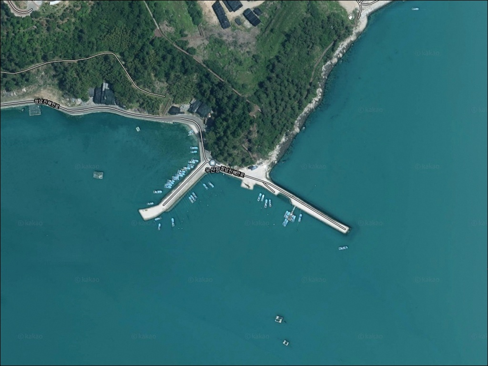
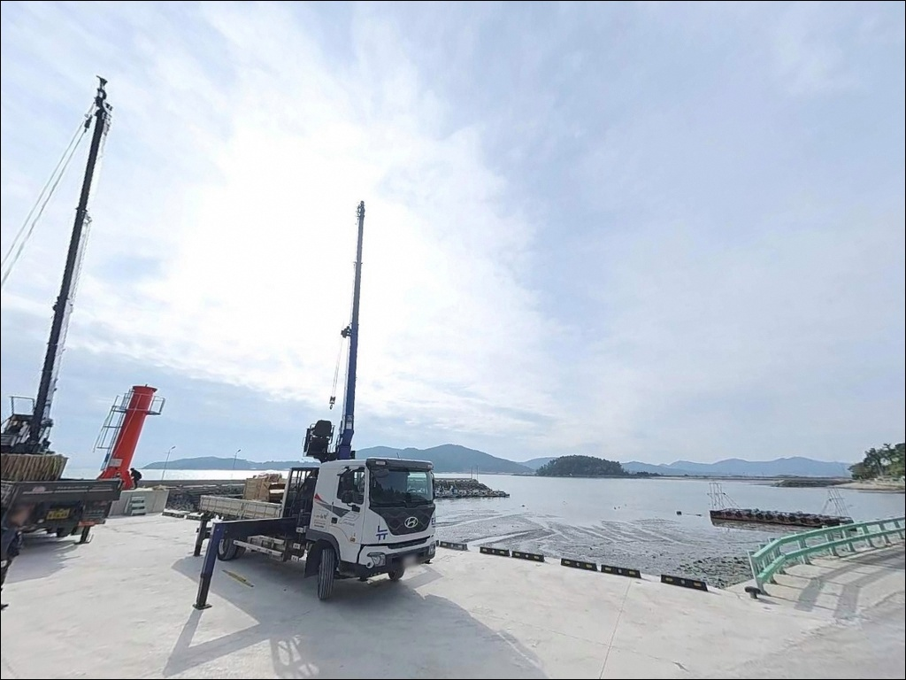
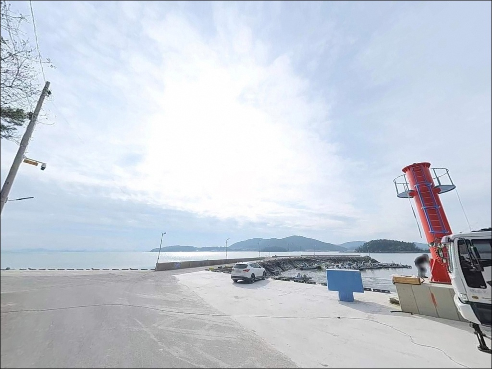
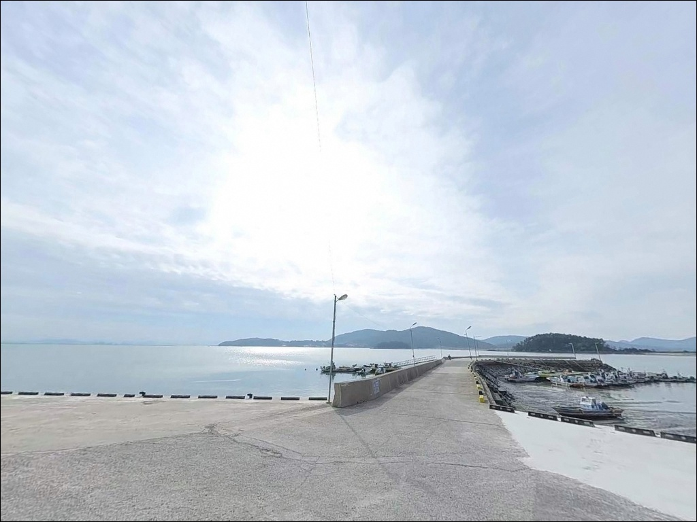
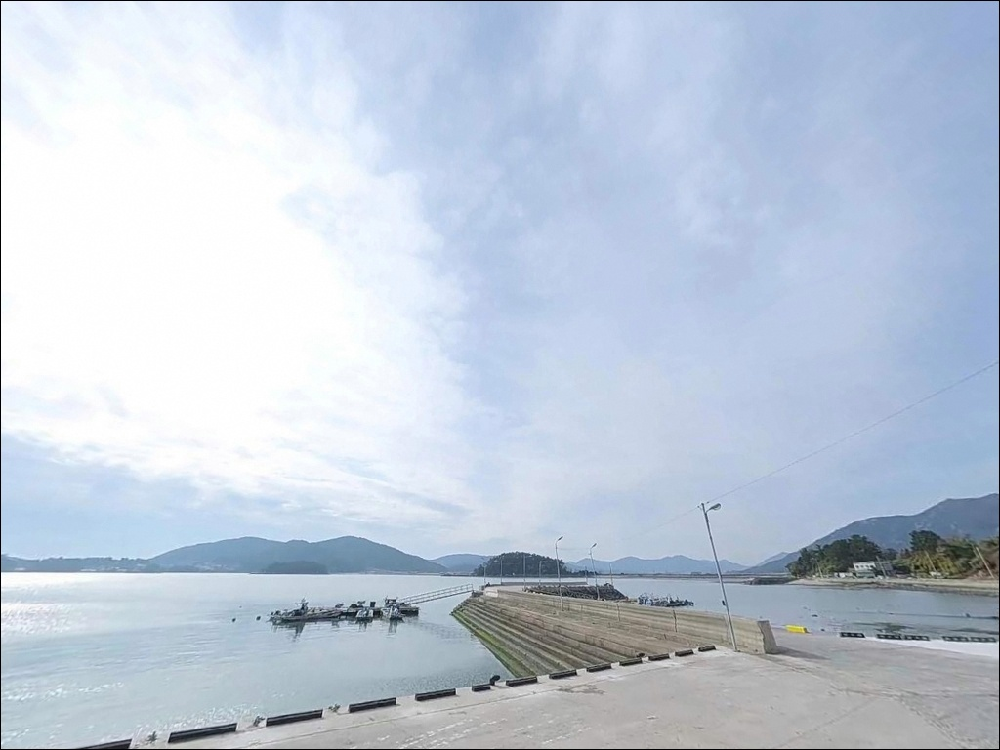
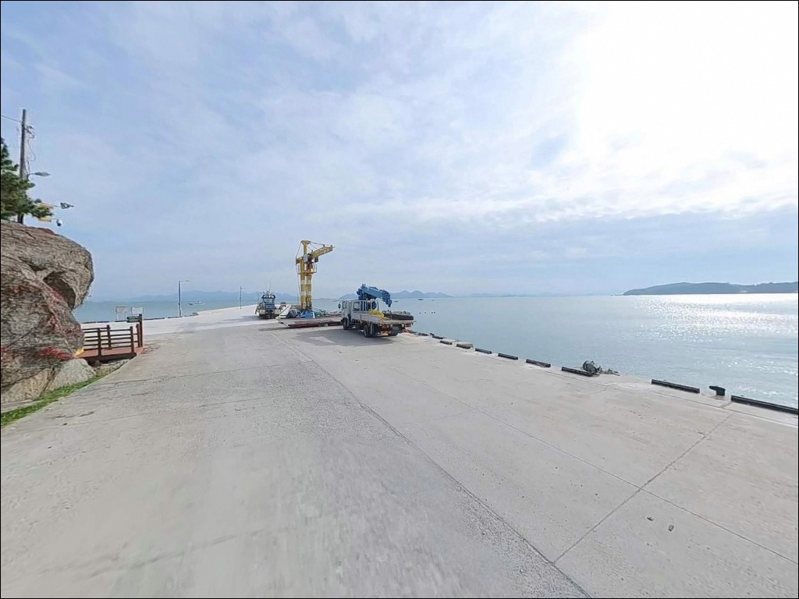
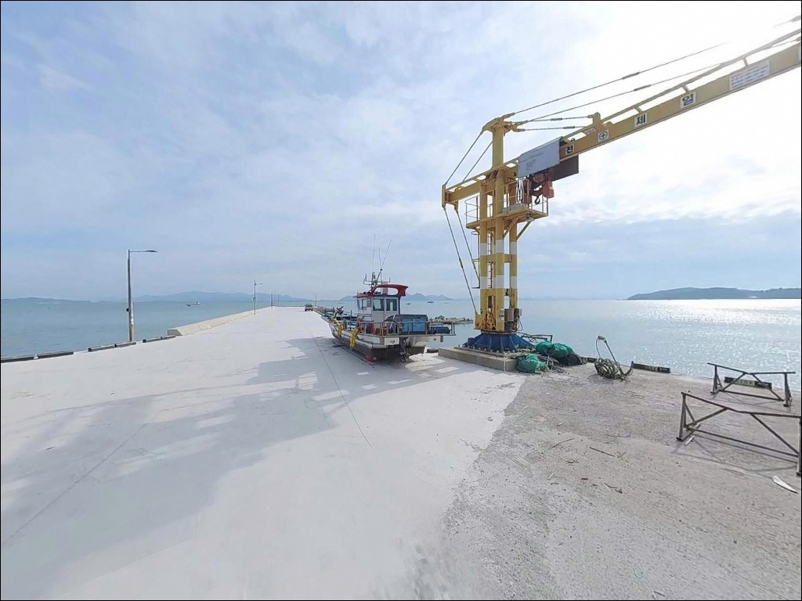
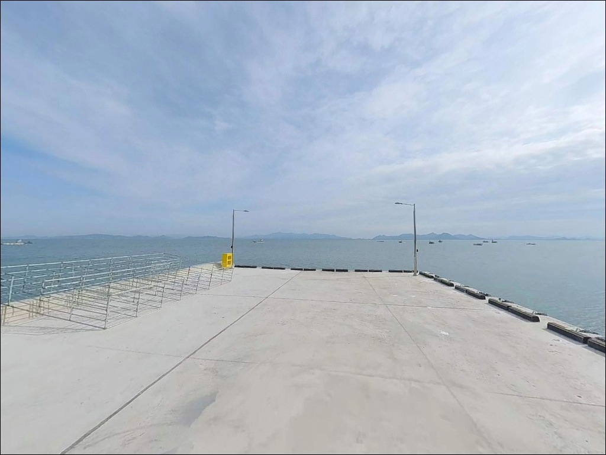
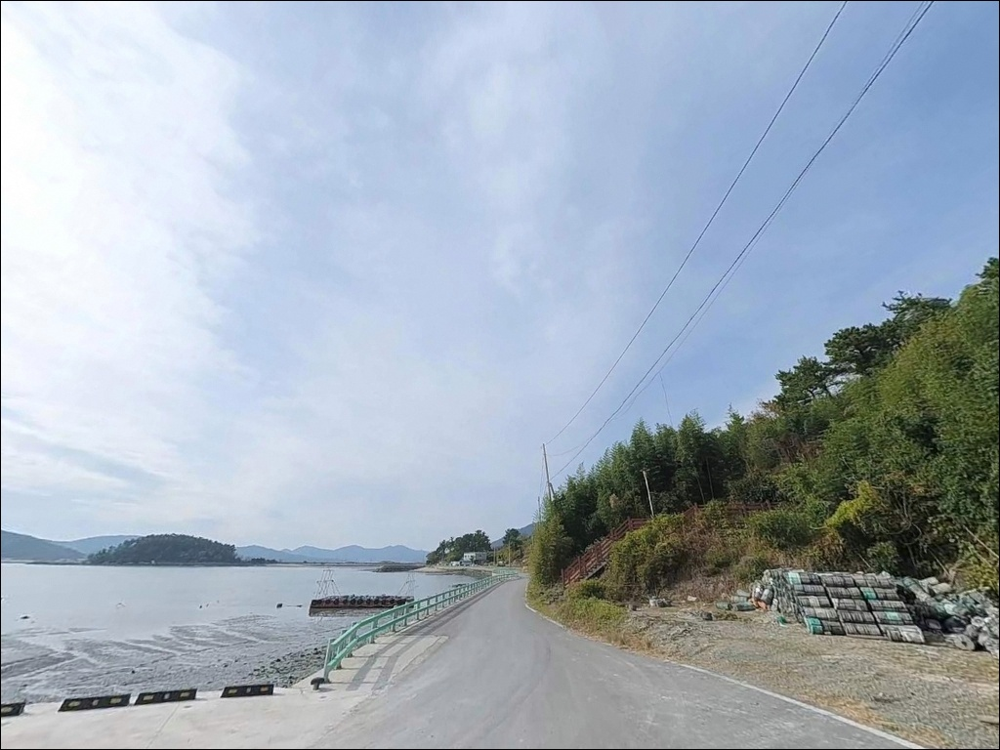

우산항, 전남 장흥군 방파제 외항 원투 낚시 차박 명당 추천
이 페이지에는 광고(제휴 링크 포함)가 있으며, 광고 링크를 통해 구매하면 운영자가 판매 수익 또는 수수료를 받을 수 있습니다. 포인트 사진: 카카오맵 스카이뷰·로드뷰. 이 페이지의 지도·사진 이미지는 카카오맵의 실제 서비스 이미지와 다를 수 있습니다.


포인트 안내
우산항
전남 장흥군 관산읍 삼산리 1548-2
득량만 내만에서 낚시할 때
물때 계산 없이 들어가면
사리 전후 조류가 채비를 수직으로
세워버리는 상황이 발생합니다.
우산항은 만 내부 수로 흐름이
선착장과 방조제 끝단에 직접 걸리는 구조로,
타이밍 판단이 조과의 전부를 가르는
포인트입니다.
전남 장흥군 관산읍 삼산리 해안에 자리한 우산항은
어촌뉴딜300 사업을 통해 물양장과 선착장이
정비된 지방어항으로,
정남진전망대 바로 인근에 위치해
진입 환경과 주차 여건이 이 권역에서
안정적인 축에 드는 포인트입니다.
이 글은 우산항의 진입 동선, 차박 여건,
물때 판단 기준, 낚시 스타일별 공략 조건에 집중합니다.
조황 단정이나 특정 어종 보장은
이 글의 범위에 포함되지 않습니다.

1. 진입 동선과 포인트 접근성
우산항 진입은 관산읍 중심에서
정남진해안로를 따라 남쪽으로 내려오는
해안도로 축을 이용하는 구조입니다.
삼산방조제 삼거리를 기점으로 해안 방향으로 꺾으면
항구까지 포장도로가 끊기지 않고 이어집니다.
급경사 없이 평지성 진입 구조여서
대형 SUV와 캠핑카도 진입에 큰 어려움이 없습니다.
항 내부 선착장 앞 광장과
방조제 진입부 공간 모두 회차가 가능한 구조입니다.
주차 후보는 선착장 물양장 옆 평지,
방조제 기저부 주차 공간,
인접한 정남진전망대 주차장 구간으로 나뉩니다.
5~10대 이상 수용 가능한 수준이어서
성수기 주말을 제외하면 자리 확보가
어렵지 않은 편입니다.
어선 이동이 이루어지는 항이므로
이른 새벽과 오후 선착장 앞쪽 진입로는
어선 작업 동선을 비워두는 것이 기본입니다.
주차 매너가 재방문 조건을 결정합니다.

2. 차박 환경과 야간 체류 여건
우산항 주변은 어촌 마을과 농경지가 함께 있는
조용한 해안선으로,
야간에는 차량 통행이 거의 없는 편입니다.
정남진전망대 조명이 근처에서 일부 영향을 주지만,
항 자체는 가로등이 제한적이어서
개인 조명 장비는 필수입니다.
득량만 내만 구조여서 외해 너울 영향이 적고,
기상이 나빠도 파도 높이가 낮은 편이라
차에서 머무는 안정감 면에서는 나쁘지 않습니다.
관광 시즌(여름·가을)에는
정남진 방문객 유동이 있으나
심야에는 조용해집니다.
차박보다는 낚시 후 짧게 하룻밤 쉬는 용도에
적합한 구조입니다.


3. 주변 편의시설 및 인프라 현황
우산항 반경 3km 이내 편의점은 없습니다.
관산읍 시내까지 차량으로 5~10분이면
닿을 수 있어,
관산농협 하나로마트, 식당, 주유소 등
기본 생활 인프라를 모두 이용할 수 있습니다.
출발 전 식수·얼음·채비 여분·연료는
관산읍 시내에서 채워두고 진입하는 것이
현실적인 동선입니다.
장흥읍까지는 약 15km 거리이며,
24시 편의점과 응급 의료 인프라가
집중되어 있습니다.

4. 득량만 물때를 먼저 잡아야 하는 이유
우산항 방문 전 가장 먼저 확인할 것은
물때입니다.
득량만은 한국 남해안에서도
조차(潮差)가 크기로 알려진 해역 중 하나입니다.
사리 전후에는 수로 방향으로 조류가 세게 흐르며,
채비를 세워두기 어려운 상황이 발생합니다.
바다타임에서 관산읍 기준 물때를 확인하고
조금 전후 또는 들물·날물 변환 타이밍을
노려 출발 시각을 맞추는 것이 기본입니다.
방조제 외측과 선착장 끝단에서의 낚시는
조류 방향에 따라 채비 운용이 달라집니다.
들물 시에는 외항 방향으로 조류가 유입되며,
이 타이밍에 원투와 에깅 효율이 올라갑니다.
기상 확인도 빠뜨리면 안 됩니다.
내만 구조여도 바람 방향과 파고는
당일 아침 다시 한번 확인하는 편이 좋습니다.
테트라포트 외측 구간은 미끄럼 위험이 높아
스파이크 신발과 구명조끼 착용이 필수입니다.
야간 입장 시 개인 헤드랜턴은
방파제 끝단까지 이동하는 데 기본 안전 장비입니다.

5. 지형 기반 낚시 여건 분석
우산항은 내항 선착장과 방조제가 함께 구성된
전형적인 남해안 소형 어항 구조입니다.
선착장은 177m와 112m 규모의
두 개 접안 시설로 이루어져 있으며,
방조제 외측이 득량만 해역을 직접 바라봅니다.
외항 쪽 석축과 테트라포트 혼합 구간이
낚시 가능한 핵심 발판 구간입니다.
수심은 내항보다 방파제 끝단으로 갈수록
점진적으로 깊어지는 구조이며,
방조제 외측 수로 입구 쪽에서
수심 급변 구간이 형성됩니다.
이 구간이 채비 운용의 핵심 지점이며,
들물 시 조류가 유입되면서
바닥층 어종의 움직임이 살아나는 자리입니다.
내항은 수중 턱이 일부 형성되어 있어
근거리 찌낚시 운용에 적합한 잔잔한 수면 조건입니다.
득량만은 장흥군이 최근 수년간
감성돔 치어를 꾸준히 방류한 해역으로,
가을 시즌 방파제 주변 입질 활성이
이 권역의 일반적인 패턴입니다.
우산항에서도 수온 상승기를 기준으로
외항 중심 어종 활동을 기대해 볼 수 있습니다.
최신 조황은 출조 전에 꼭 검색해 보시기 바랍니다.


6. 포인트에 어울리는 낚시 스타일
우산항에서 가장 기본이 되는 낚시는
방파제 끝단과 외항 방향을 노리는
원투낚시입니다.
모래와 뻘이 섞인 바닥 지형에서
붕장어와 보리멸을 기대할 수 있으며,
들물 타이밍에 채비를 멀리 보내
수심 급변 구간 바닥을 집중 탐색하는 방식이
이 포인트 지형에 가장 잘 맞습니다.
에깅과 루어낚시도 이 포인트에서
충분히 노려볼 수 있는 스타일입니다.
방파제 석축 주변과 선착장 내항 직벽 부분에서
가을철 갑오징어와 주꾸미를 대상으로
에기를 운용하는 패턴이 득량만 일대에서
성행하는 방식입니다.
야간에는 석축 경계선을 따라
소형 루어로 볼락을 탐색하는 구성도
자연스럽게 병행 가능합니다.
외항 테트라포트 경계 지점에서는
찌낚시도 가능한 지형 조건을 갖추고 있습니다.
조류를 타며 흘리는 전유동 찌 방식으로
감성돔과 숭어를 겨냥하는 구성이 어울리며,
들물이 약해지는 정조 전후 타이밍에
조류 속도가 찌낚시 운용에 맞는 흐름으로
변환됩니다.

7. 대안 포인트와 플랜 B 동선
우산항 조류가 너무 세거나
주차 자리가 여의치 않을 때
가장 먼저 이동할 곳은
정남진 해양낚시공원입니다.
우산항에서 차량으로 10분 이내 거리이며,
부잔교와 낚시교가 완비된 감성돔 명소로
공식 자료가 풍부하고 낚시 환경이 안정적입니다.
같은 관산읍 해안선에서 유사한 수심 구조와
조류 흐름을 가진 소형 방파제들이
득량만 연안을 따라 분포합니다.
수문항은 바지락·키조개 산지로 알려진
관산읍 대표 어항으로,
우산항보다 규모가 크고
낚시 관련 정보 접근성이 더 높은 대안입니다.
남포항(장흥군 용산면)이나 회진항(장흥군 회진면)도
장흥 남부 해안권 대안 포인트입니다.
차박 기준으로는
정남진전망대 주차장이 화장실과 주차 공간이
공식 확보된 조건이어서
우산항 차박 여건이 부족할 때 현실적인 대안이 됩니다.

물때만 맞추면
우산항은 예상보다 가능성 있는
득량만 포인트입니다
원투낚시, 에깅, 찌낚시를 복수로 운용하고 싶은
낚시인이라면 우산항의 지형 구조는
잘 맞는 조건을 갖추고 있습니다.
정비된 선착장과 방조제, 안정적인 진입 환경,
그리고 관산읍 인프라가 가까운 점이
이 포인트를 초행 방문에도
부담 없이 선택할 수 있게 합니다.
반면 물때 계산 없이 사리 전후에 도착하거나,
편의시설을 현장 근처에서 해결하려 한다면
헛걸음이 될 가능성이 있습니다.
물때 확인, 관산읍 사전 보급, 채비 여분 준비,
이 세 가지를 갖추고 들어간다면
득량만의 조류 흐름을 제대로 활용하는
출조가 될 수 있는 포인트입니다.
조용한 어촌 항구에서 외항 조류를 옆에 두고
하룻밤 머무는 차박 여행을 병행하고 싶다면,
정남진전망대 인근이라는 지리적 조건이
낚시와 차박을 자연스럽게 엮어주는
출발점이 됩니다.